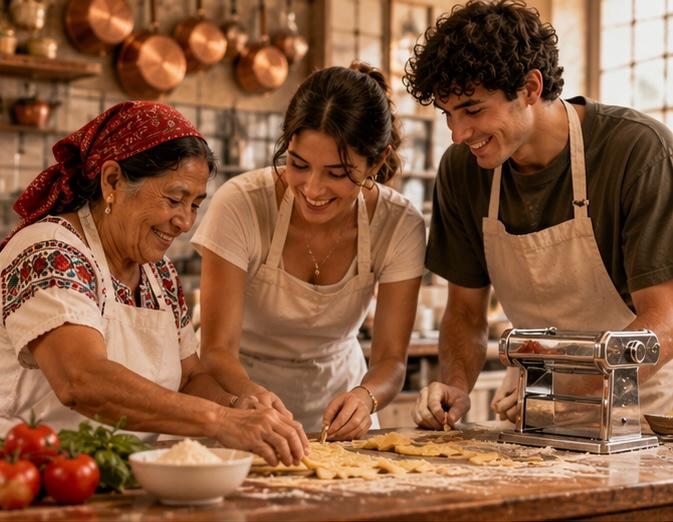
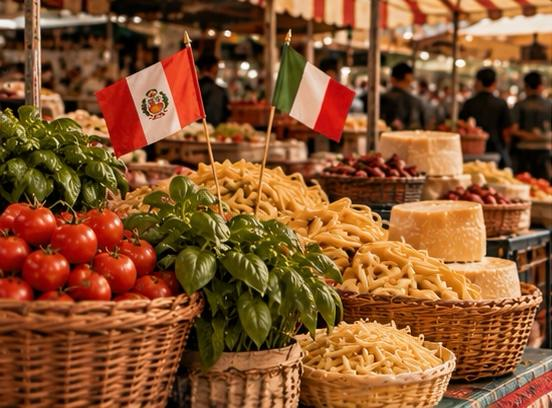

Fusione gastronomica tra Perù e Italia

Influenza della migrazione italiana sull’identità gastronomica peruviana
La gastronomia peruviana è il risultato dell’incontro tra culture diverse, tra cui quella italiana. Durante il XIX secolo, soprattutto tra il 1840 e il 1880, molti immigrati italiani arrivarono in Perù, portando con sé le loro tradizioni, ricette e tecniche culinarie.
Gli italiani hanno portato le loro ricette e il loro modo di cucinare. Con il tempo, queste tradizioni si sono unite agli ingredienti peruviani, creando nuovi piatti. Per esempio, i tallarines verdes sono un esempio della fusione tra le due culture: prendono ispirazione dal pesto italiano, ma utilizzano ingredienti e sapori tipici della cucina peruviana, mentre il menestrón è una variante del minestrone italiano.
L’influenza italiana non ha soltanto arricchito la cucina del Perù, ma ha anche contribuito alla sua identità culturale. Questo incontro dimostra che la migrazione non significa solo spostarsi in un altro paese, ma anche condividere tradizioni e trasformare la vita quotidiana. Oggi, la cucina italo-peruviana rappresenta un esempio di integrazione culturale.

Impatto della fusione gastronomica sul commercio e sulla ristorazione
La migrazione italiana ha trasformato la cucina peruviana, dando origine a piatti emblematici che riflettono la ricca eredità culturale e introducendo nuove ricette, tecniche culinarie e prodotti alimentari che si sono progressivamente integrati nella gastronomia.
Nel commercio, la diffusione della pasta e dei prodotti di origine italiana ha creato nuove opportunità per le imprese alimentari, i produttori e i distributori.

Un esempio molto significativo è il marchio peruviano di origine italiana Don Italo, specializzato nella produzione di pasta artigianale, che con 35 anni di esperienza ha ampliato la propria offerta includendo anche sughi e altri prodotti della tradizione italiana. Inoltre, la Camera di Commercio di Lima contribuisce allo sviluppo delle imprese e degli scambi commerciali, favorendo anche la crescita del settore alimentare peruviano.
Questa azienda peruviana ha ampliato la propria presenza nei supermercati e ha diversificato la produzione di pasta fresca e surgelata, riuscendo così a raggiungere un mercato più ampio.
Inoltre, nel settore della ristorazione, questa fusione ha permesso di ampliare i menù con piatti come i tallarines verdes, ispirati alla pasta al pesto, e il menestrón peruviano, derivato dal minestrone italiano.
Promozione delle tradizioni gastronomiche
La gastronomia è importante per mantenere un senso di cultura, appartenenza e felicità, specialmente per gli immigrati come quelli italiani che possono sentirsi come pesci fuori dall'acqua a Peru.
Le istituzioni, tanto italiane quanto peruviane, hanno un importante ruolo nello sviluppo e preservazione della bella misture della gastronomia italiana e peruviana. Osserviamo questo principalmente attraverso l’Istituto Italiano di Cultura di Lima, questo è parte dell’ambasciata italiana a Lima, e risponde all'espansione e preservazione della cultura italiana nella cittá dei ré attraverso ferie di cibo italiano ed europeo, corsi per cucinare alcuni dei piatti italiani piú popolare. Anche, nel lato peruviamo, troviamo un forte interesse del MINCETUR, nella gastronomía italiana, italo-peruviana e nella mistura bilaterale di questa. Con piani del MINCETUR per formare franchigie di cibo peruviano in Italia ed includendo piatti di fusione italo-peruviani nei tanti articoli su l’alta cucina del nostro paese.
Evoluzione della gastronomia italo-peruviana attraverso la migrazione e lo scambio culturale

L’evoluzione della gastronomia italo-peruviana fu influenzata dall’immigrazione italiana, particolarmente significativa durante il XIX secolo. Con il tempo, gli immigrati iniziarono a coltivare orti e a introdurre verdure come le bietole, le zucchine, gli spinaci, il cavolfiore, i broccoli, le melanzane e il basilico, tra le altre.
Molti diventarono proprietari di attività commerciali, trasformandole in importanti luoghi di scambio culturale, dove si diffusero la pasta, i formaggi e le olive.
Con il tempo, nacquero fusioni e innovazioni culinarie grazie alla combinazione di ricette e ingredienti: il pesto italiano ispirò la creazione dei tallarines verdes, adattati agli ingredienti e ai gusti peruviani, il minestrone divenne il menestrón e la torta pasqualina si trasformò nel pastel de acelga.
Successivamente, Pedro D’Onofrio arrivò con un carretto dei gelati e suo figlio introdusse il panettone grazie a una collaborazione con l’azienda milanese Alemagna.
Le nostre radici, i nostri sapori
A tutti sarà capitato di desiderare di mangiare un pezzo di panettone o un grande piatto di tallarines verdes, ma ci siamo mai messi a pensare da dove vengono? Tantissime delle nostre storie, tradizioni e piatti tipici sono grazie alla nostra facilità di integrare ciò che è nuovo nella nostra cultura, e questa è una qualità di cui dobbiamo essere fieri.
Gli italiani arrivarono tantissimi anni fa nelle nostre terre portando ingredienti come gli spinaci, il cavolfiore, il basilico e la melanzana, elementi adesso molto usati nelle nostre cucine. Ma non solo ci portarono ingredienti, anche piatti che con il tempo abbiamo modificato facendoli diventare parte della nostra vita alimentare quotidiana come il mondonguito, il menestrón, il pastel de acelga, come qualunque tipo di pasta!
Per quello è molto importante celebrare le nostre unioni e le diverse radici mondiali che ci portano a essere come siamo. I piatti italiani potranno continuare a vivere tra di noi ma con un carattere diverso, e con un pizzico di inventiva peruviana in più.